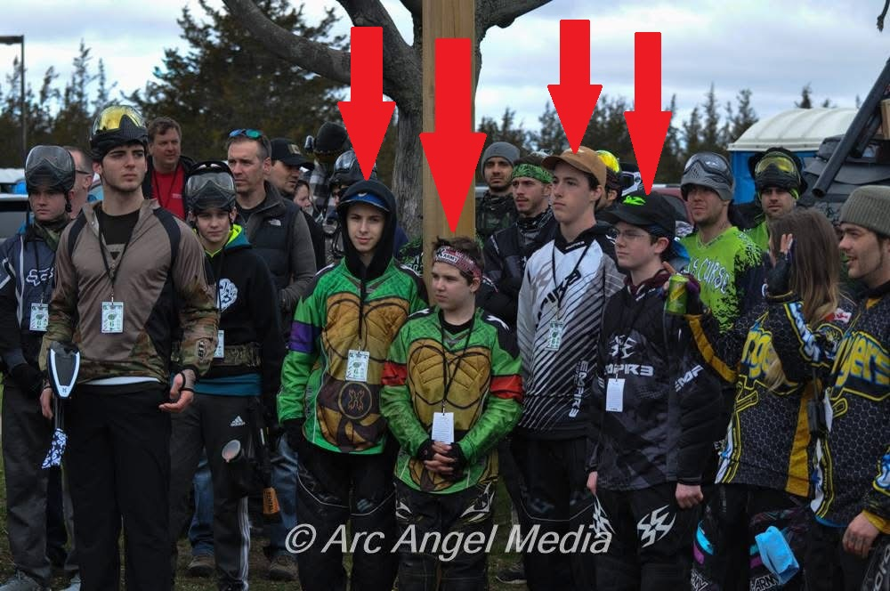
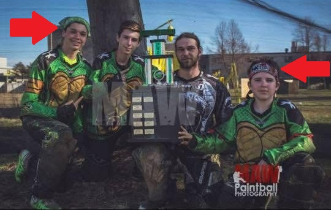
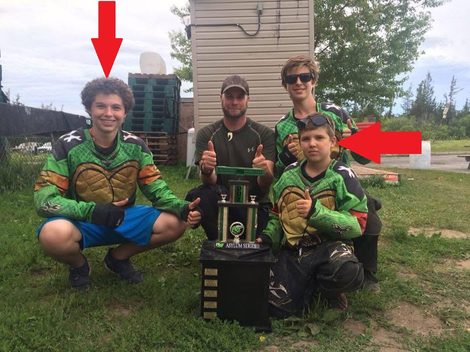
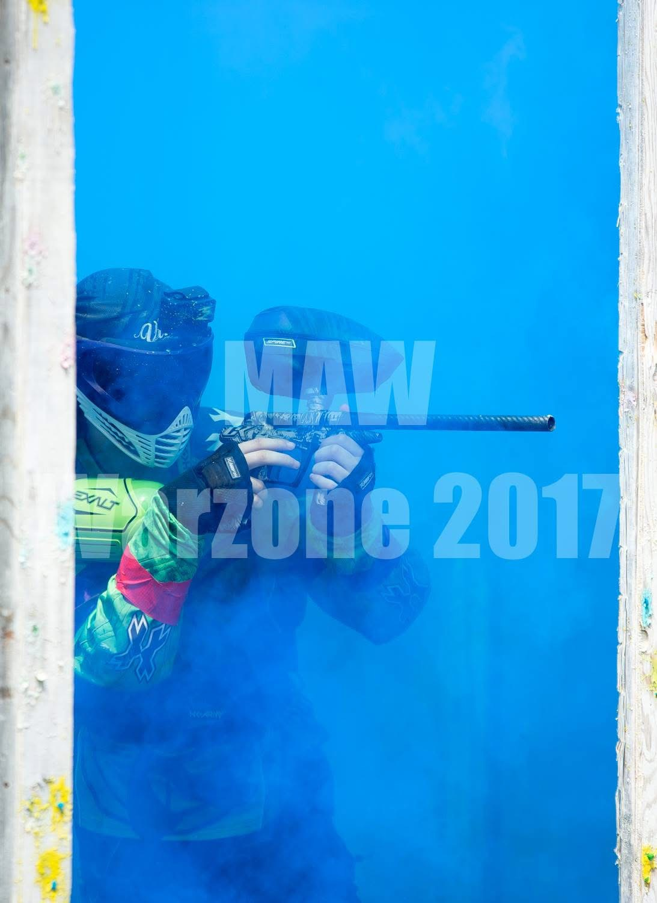

I loved tinkering with and troubleshooting my own paintball equipment, and couldn't afford to have it repaired by other companies — so I learned to do it myself. I got good at it, realized other players needed the same service, and started repairing equipment at my local field at age 11.
After a season it took off and I started to make a name for myself. I moved up to bigger fields and bigger events, brought on friends, and trained them as employees. By 14, we were servicing events of up to 1,000 people with 3 employees working out of a tent. It stayed successful until COVID shut down most fields within a three-hour drive and university got busy, so I wound it down around 2019. It was my first taste of real entrepreneurship — and it's where I realized how much I love this.
We didn't just do repairs — we played, usually in key leadership positions despite being younger. Over the years we earned the community's respect and helped build a tight, welcoming scene around the sport. We were even featured in a paintball magazine out of Quebec. This is where I strengthened my ability to work in a team under high-stress conditions.





Featured in Quebec paintball media — and the experience that first showed me how much I love building something of my own.